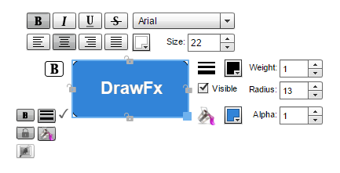

Architecture
DrawFx uses an MVC Architecture with multiple Views bound to a Model. Controllers handle user interactions with the Keyboard and Mouse, including Drag/Drop, Selection, Copy/Paste, etc.
The top-level container is a Document which has a Model, a Collection of Views and a Collection of Controllers. It also has a CommandContext which manages Undo/Redo stacks for Commands.
A Dependency Injection Factory (similar to Spring) allows Component definitions to extend other definitions, provides for Singletons and uses the AS3 Reflection/Metadata API to construct and initialize components and their dependencies. See the DrawFxFactoryInitializer class for example.
In-Context Editing
In-context editing of shapes, images, lines and text boxes (via the check mark to the lower left of the selected object) allows you to change font, stroke, fill and constraint properties without having to switch contexts from the selected shape(s) to the toolbar and back again.
Effects
In addition to the in-context settings, you can also apply four different effects to the selected objects:
- Drop Shadow
- Glow
- Bevel
- Blur
Export Options
In addition to saving drawings to JSON files DrawFx can also export PNG and JPG files.
Demo
Click here to see a live demo. Right-click anywhere on the demo to view source.
AS Docs
Click here to see documentation.